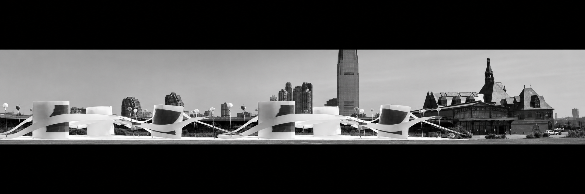
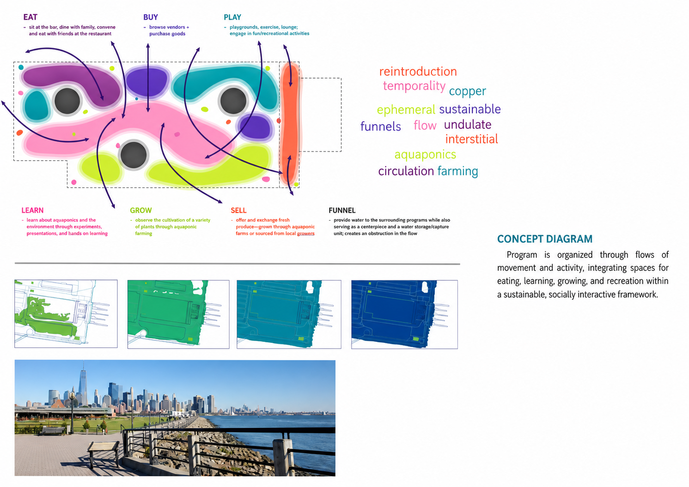
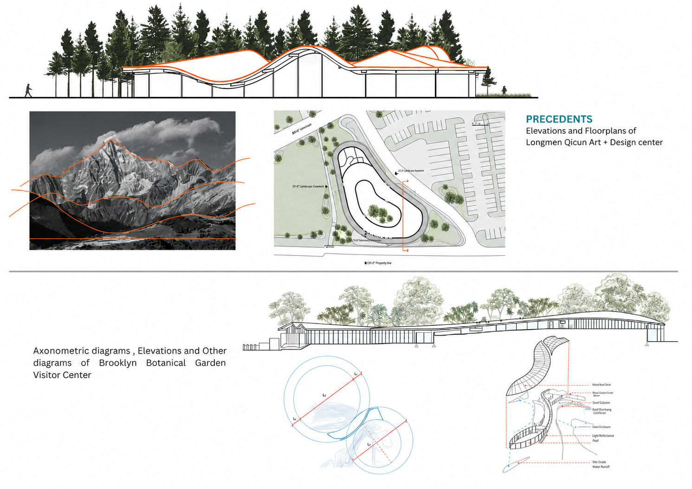
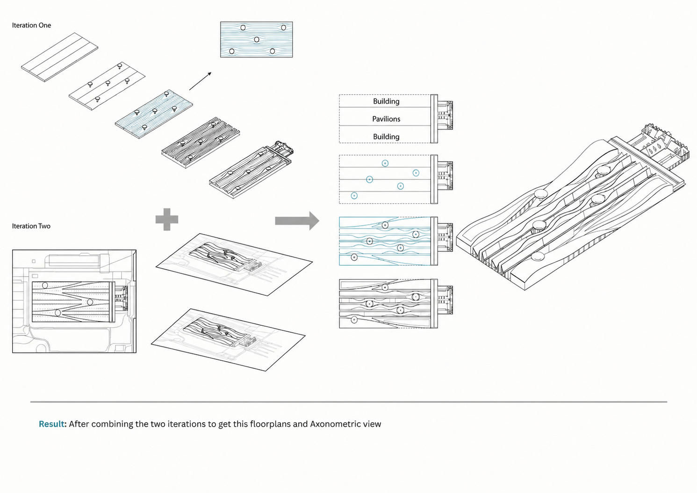
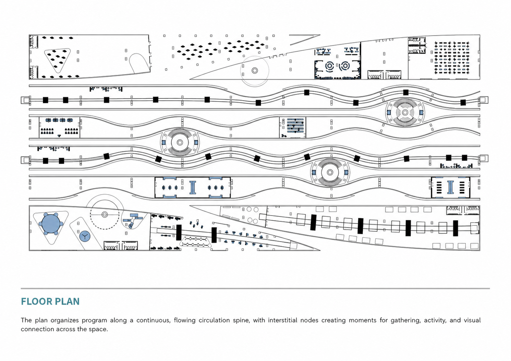
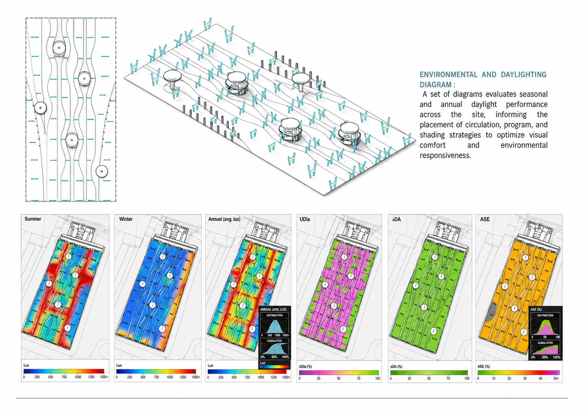

02 / ARCH 495 · Ecological civic space
Liberty Rail
Gardens

Project statement
Rooted in the ecological and maritime history of Liberty State Park and the neighboring Communipaw settlement, this project reintroduces indigenous plant and aquatic species through programmed pavilions, aquaponic farms, and exhibition spaces.

Architecture designed to
eventually yield to water.
The undulating façade traces water and human movement. Tilted roofs bring light into aquatic and public environments, while concrete, wood, and copper express change over time.



